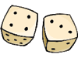
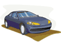
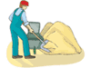

Simple and Explicit Dependence
This lesson illustrates how PolyAnalyst can be used for performing an automated discovery of a formula that relates two attributes.
Database Marketing
In this lesson, PolyAnalyst is used to predict the most probable buyers for a new product based on demographic data of past responders.
Medical Study
The user learns to manipulate datasets, create various graphs for data visualization, and create and apply rules in PolyAnalyst.
Market Basket Analysis
The goal is to identify the best cross-sell relations and increase the value of customer interactions through the analysis of historical transactional data.

Miles Per Gallon Analysis
We find an empirical rule that relates the MPG (miles per gallon) characteristic of a car with other technical parameters of the car.
Transactional Basket Analysis
Historical transactional data is usually organized in the "basket-product" relations format. This case illustrates the corresponding analysis technique.
Miles Per Gallon Prediction
This tutorial is an extension of the previous tutorial and is directed more toward using data from the previous analysis to help in predicting miles per gallon.
Text Analysis: Occupational Hazards
We analyze natural language notes (call center claim records) in order to determine occupational trauma hazards for a large insurance company.

Forecasting the Gold Price Change
We embark on predicting the direction of change of gold price in the COMEX trading system between two sequential sessions.
Fraud Detection
This lesson illustrates typical tasks and exploration techniques (Link Analysis and Basket Analysis) encountered in fraud detection projects.
Customer Survey Analysis
This example illustrates how the analysis of customer surveys can help better position the product in a future marketing campaign.
PolyAnalyst Scheduler
This examples illustrates the power of Scheduler, a tool for automating batch process data mining in PolyAnalyst.
Contact us at
info@megaputer.com
• Phone: +1.812.330.0110
© 2002 Megaputer Intelligence, Inc. All Rights Reserved
Case Studies
Exploration Engines
Direct Marketing
Market Basket Analysis
Marketing Intelligence
Portfolio Management
Currency Dealing
Medical School
Ulm Hospital
Surgery Research
Pittsburgh Hospital
In-flight Control
InfoWorld Review
Personnel Retention
Summary Statistics
Linear Regression
Find Dependencies
Classify
Cluster
Decision Tree
Decision Forest
Discriminate
Find Laws
Nearest Neighbor
PolyNet Predictor
Market Basket Analysis
Transactional Analysis
Text Analysis